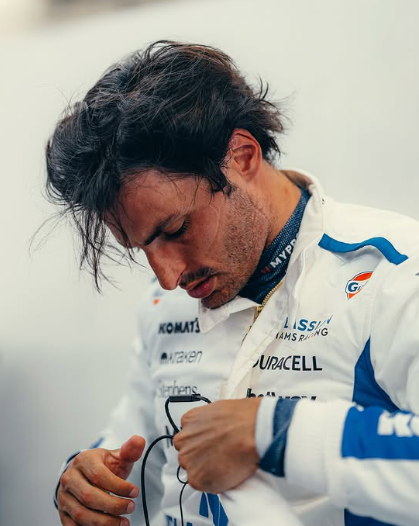

Carlos Sainz
Carlos Sainz
Team: Williams Racing
Team Principal: James Vowles
Number: 55
Nationality: Spain
Debut: 2015
Born: 1 September 1994
History: Spanish driver Carlos Sainz Jr. built a reputation as one of Formula 1’s most reliable and technically capable competitors. After racing for teams including Toro Rosso, Renault, McLaren, and Ferrari, Sainz became highly respected for his consistency, adaptability, and detailed feedback in car development. Following his move to Williams, he took on a leadership role in the team’s long-term rebuilding project. Combining intelligence, race management, and strong teamwork, Sainz remained one of the grid’s most complete and dependable drivers entering 2026.
